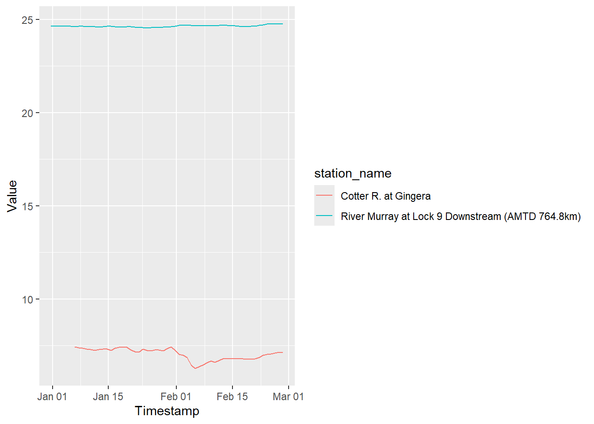
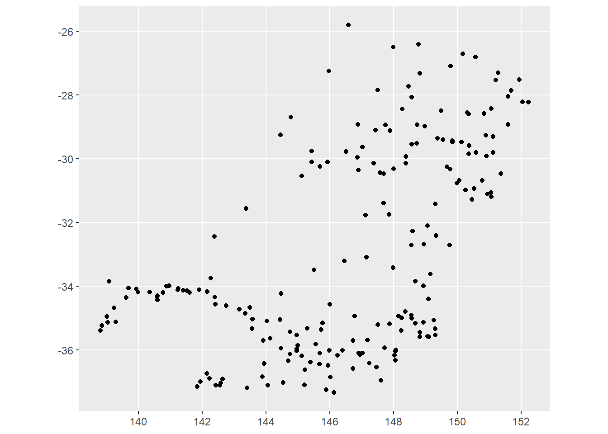
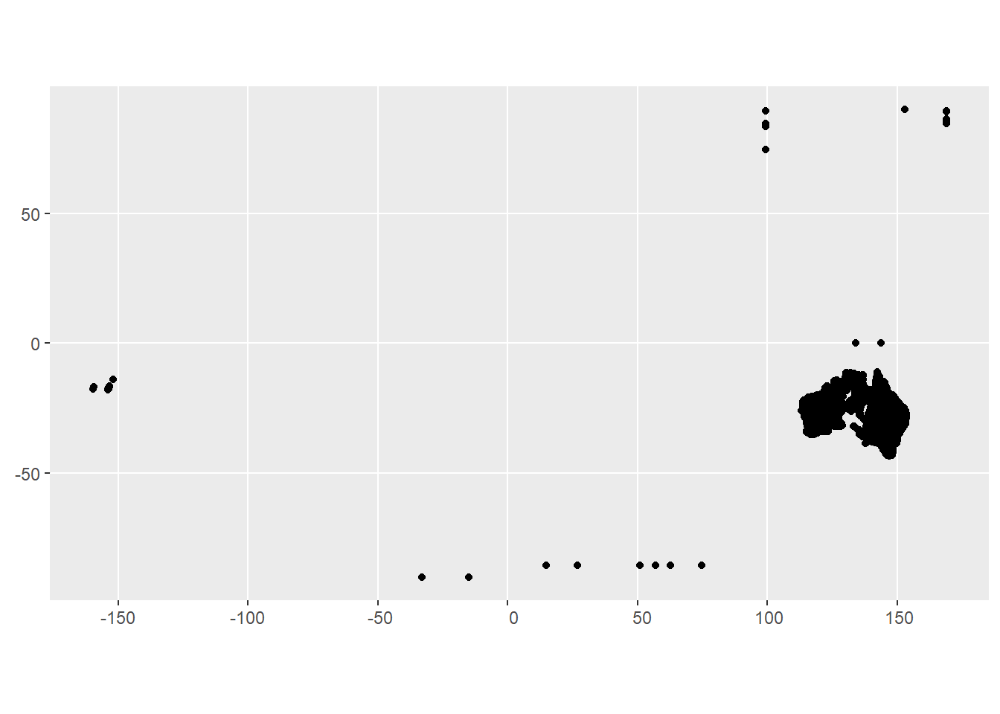

renv::install('buzacott/bomWater')Waterdata from BOM
I wrote {hydrogauge} to get information about water gauges in Victoria, and then discovered it also works in NSW and Queensland. It does not seem to work in South Australia though.
Can we just use bomWater? Or use it to figure out how to call BOM myself?
First question is whether it works. I’ve heard rumors BOM has gotten harder to call, but mdba-gauge-getter still manages.
library(bomWater)It doesn’t obviously have a lot of the query tools from hydrogauge, but let’s see if it works with the example
cotter_river <- get_daily(parameter_type = 'Water Course Discharge',
station_number = '410730',
start_date = '2020-01-01',
end_date = '2020-01-31')Seems to. Let’s try a couple I know I need
mr97 <- get_daily(parameter_type = 'Water Course Discharge',
station_number = 'A4260505',
start_date = '2000-01-01',
end_date = '2000-05-30')That basically looks like it works. It’s missing some functionality I want, but much better than nothing.
get_station_list(station_number = 'A4260505')# A tibble: 1 × 5
station_name station_no station_id station_latitude station_longitude
<chr> <chr> <int> <dbl> <dbl>
1 River Murray at Lock… A4260505 1617110 -34.2 142.get_parameter_list(station_number = 'A4260505')# A tibble: 2 × 7
station_no station_id station_name parametertype_id parametertype_name
<chr> <int> <chr> <int> <chr>
1 A4260505 1617110 River Murray at Loc… 11762 Water Course Disc…
2 A4260505 1617110 River Murray at Loc… 11763 Water Course Level
# ℹ 2 more variables: parametertype_unitname <chr>,
# parametertype_shortunitname <chr>It looks like there is a getDataAvailabiltiy option in the API, but bomWater doesn’t query it. The requests in bomWater don’t obviously map to the docs, so this would take some tweaking.
In searching for how the ‘request’ in bomWater turns into the getSomethingSomething in the API (unsuccessfully), I found another package to try. It’s canadian, but seems to hit Kisters WISKI generally.
library('kiwisR')Check it works.
ki_timeseries_list(hub = 'https://www.swmc.mnr.gov.on.ca/KiWIS/KiWIS?', station_id = '144659')# A tibble: 223 × 6
station_name station_id ts_id ts_name from to
<chr> <chr> <chr> <chr> <dttm> <dttm>
1 Jackson Cre… 144659 9489… Precip… 2007-06-18 20:15:00 2024-09-10 22:15:00
2 Jackson Cre… 144659 1143… Precip… 2007-07-01 05:00:00 2020-09-01 05:00:00
3 Jackson Cre… 144659 1143… Precip… 2007-06-18 05:00:00 2024-09-11 05:00:00
4 Jackson Cre… 144659 9489… TAir.1… 2007-06-18 20:15:00 2024-09-10 22:15:00
5 Jackson Cre… 144659 9489… TAir.D… 2007-06-18 05:00:00 2024-09-09 05:00:00
6 Jackson Cre… 144659 9489… TAir.D… 2007-06-18 05:00:00 2024-09-09 05:00:00
7 Jackson Cre… 144659 1129… TAir.6… 2007-06-19 00:00:00 2024-09-10 18:00:00
8 Jackson Cre… 144659 1326… TAir.D… 2007-06-18 05:00:00 2024-09-11 05:00:00
9 Jackson Cre… 144659 1326… TAir.D… 2007-06-18 05:00:00 2024-09-11 05:00:00
10 Jackson Cre… 144659 9490… TWater… 2007-06-18 05:00:00 2024-09-09 05:00:00
# ℹ 213 more rowsDoes it work for BOM? No, the url is almost certainly wrong. This expects a KiWIS API, which it looks like BoM doesnt use (at least just shoving Kiwis on the end doesn’t work.
ki_timeseries_list(hub = "http://www.bom.gov.au/waterdata/services", station_id = 'A4260505')Error in if (nrow(json_content) == 2) {: argument is of length zeroki_timeseries_list(hub = "http://www.bom.gov.au/waterdata/services/KiWIS/KiWIS?", station_id = 'A4260505')Error: lexical error: invalid char in json text.
<html><head><title>Apache Tomca
(right here) ------^Interesting. If I go to http://www.bom.gov.au/waterdata/services, I get the message “KISTERS KiWIS QueryServices - add parameter ‘request’ to execute a query.” So it is a KiWIS, but maybe doesn’t take request in the same way as kiwisR expects? bomWater does use request, so maybe this will help figure out how to specify new ones. Looking at code, kiwisR and bomWater look like they’re constructing the requests the same, so it’s a bit odd the kiwis doesn’t work with the bomWater url.
Am I just calling something incorrectly? Can kiwisR hit that URL for other things? I can get a list of all stations. So that implies the URL does work. This is just very long, so I’m not rendering it.
ki_station_list(hub = "http://www.bom.gov.au/waterdata/services")It doesn’t seem to work to search for stations by id though.
ki_station_list(hub = "http://www.bom.gov.au/waterdata/services", search_term = "A4260505")# A tibble: 0 × 5
# ℹ 5 variables: station_name <chr>, station_no <chr>, station_id <chr>,
# station_latitude <dbl>, station_longitude <dbl>Ah! It hits the station_name, not the gauge number in station_no
ki_station_list(hub = "http://www.bom.gov.au/waterdata/services", search_term = "A*")# A tibble: 1,951 × 5
station_name station_no station_id station_latitude station_longitude
<chr> <chr> <chr> <dbl> <dbl>
1 A 61700620 400630 -30.3 115.
2 A 60210202 11517225 -35.1 118.
3 A 60210203 11517229 -35.1 118.
4 A 60210201 11517221 -35.1 118.
5 A 60210298 11520185 -35.1 118.
6 A 61311025 11457669 -32.7 116.
7 A 120310078 11287358 -25.5 129.
8 A 60110485 11465949 -33.7 121.
9 A 60110497 11465977 -33.7 121.
10 A 60110584 11466057 -33.6 122.
# ℹ 1,941 more rowsSo, can I get it with
ki_station_list(hub = "http://www.bom.gov.au/waterdata/services",
search_term = "River Murray at Lock 9 Downstream*")# A tibble: 1 × 5
station_name station_no station_id station_latitude station_longitude
<chr> <chr> <chr> <dbl> <dbl>
1 River Murray at Lock… A4260505 1617110 -34.2 142.The ki_timeseries_list uses station_id. But I’ve been feeding it gauge numbers, which are station_no. It works with the ID.
tl <- ki_timeseries_list(hub = "http://www.bom.gov.au/waterdata/services", station_id = '1617110')
tl# A tibble: 55 × 6
station_name station_id ts_id ts_name from to
<chr> <chr> <chr> <chr> <dttm> <dttm>
1 River Murra… 1617110 2086… Receiv… NA NA
2 River Murra… 1617110 2086… Harmon… NA NA
3 River Murra… 1617110 2086… DMQaQc… 1949-07-01 23:29:59 2024-09-08 22:30:01
4 River Murra… 1617110 2086… DMQaQc… 2008-11-26 04:34:59 2024-09-09 22:15:01
5 River Murra… 1617110 2086… DMQaQc… 2008-11-26 03:30:00 2024-09-09 21:30:00
6 River Murra… 1617110 3293… Derive… NA NA
7 River Murra… 1617110 3293… PR01Ma… NA NA
8 River Murra… 1617110 3293… PR01Ma… NA NA
9 River Murra… 1617110 3293… PR01Qa… 1949-07-01 23:29:59 2024-09-08 22:30:01
10 River Murra… 1617110 3293… PR01Qa… 1949-07-01 23:29:59 2024-09-08 22:30:01
# ℹ 45 more rowsThen, I should be able to use ki_timeseries_values if I know the ts_id I want.There’s lots of cryptic ts_name in there, but daily is “DMQaQc.Merged.DailyMean.24HR”. There are two versions here, for different date ranges.
tl[tl$ts_name == "DMQaQc.Merged.DailyMean.24HR", ]# A tibble: 2 × 6
station_name station_id ts_id ts_name from to
<chr> <chr> <chr> <chr> <dttm> <dttm>
1 River Murray… 1617110 2086… DMQaQc… 2008-11-25 14:30:00 2024-09-09 14:30:00
2 River Murray… 1617110 2086… DMQaQc… 1949-07-01 14:30:00 2024-09-08 14:30:00Is that why ki_timeseries_values doesn’t have a station argument? are the ts_ids unique across gauges? Look at two gauges. COtter river (from way above) is id 13360.
No idea why Cotter has so many ts_ids with identical ranges, but they are unique.
tl2 <- ki_timeseries_list(hub = "http://www.bom.gov.au/waterdata/services",
station_id = c('1617110', '13360'))
tl2 |>
dplyr::filter(ts_name == "DMQaQc.Merged.DailyMean.24HR")# A tibble: 8 × 6
station_name station_id ts_id ts_name from to
<chr> <chr> <chr> <chr> <dttm> <dttm>
1 River Murray… 1617110 2086… DMQaQc… 2008-11-25 14:30:00 2024-09-09 14:30:00
2 River Murray… 1617110 2086… DMQaQc… 1949-07-01 14:30:00 2024-09-08 14:30:00
3 Cotter R. at… 13360 1573… DMQaQc… 1963-07-02 14:00:00 2024-09-08 14:00:00
4 Cotter R. at… 13360 1598… DMQaQc… 1963-07-02 14:00:00 2024-09-09 14:00:00
5 Cotter R. at… 13360 3801… DMQaQc… 2003-02-23 14:00:00 2024-09-09 14:00:00
6 Cotter R. at… 13360 3801… DMQaQc… 2003-02-23 14:00:00 2024-09-09 14:00:00
7 Cotter R. at… 13360 3801… DMQaQc… 2003-02-23 14:00:00 2024-09-08 14:00:00
8 Cotter R. at… 13360 3801… DMQaQc… 1999-09-23 14:00:00 2024-09-09 14:00:00bomWater must be dealing with duplication somehow, because
any(duplicated(cotter_river$Timestamp))[1] FALSEah. bomwater just uses ts_id[1]. That’s likely not the best move. What’s better? not sure. Would be good to assess them somehow. Could give options of ‘longest’, ‘all’, ‘first’ (with longest possibly still needing a ‘first’ or ‘all’ if there are multiple.)
So, all that boils down to that I should be able to choose one of those ts_ids and pull data. Choosing one from the Murray and one from Cotter
test_timeseries <- ki_timeseries_values(hub = "http://www.bom.gov.au/waterdata/services",
ts_id = c("208669010", "380185010"),
start_date = '2010-01-01', end_date = '2010-02-28')library(ggplot2)
ggplot(test_timeseries, aes(x = Timestamp, y = Value, color = station_name)) +
geom_line()Warning: Removed 6 rows containing missing values or values outside the scale range
(`geom_line()`).
Fitting into a workflow
I typically have a gauge number, want to get the period of record, and then pull data. I can do that here, but it’s a bit roundabout because the filters keep changing what they filter. And I’d like to not have to depend on both bomWater and kiwisR.
Above, I had to go from all stations, find the name and id that matched the no, and then could get the other things. But there’s got to be a way to just search with any of those, rather than different ones for different functions, right? bomWater seems to do it.
Is there a way to search for the gauge? Not obviously, weirdly.
So, as it stands, a kiwisR based workflow looks something like this:
Get the cross-referencing info for the gauges
gauge_numbers <- c('410730', 'A4260505')
all_stations <- ki_station_list(hub = "http://www.bom.gov.au/waterdata/services")
intended_stations <- all_stations |>
dplyr::filter(station_no %in% gauge_numbers)If we want to see what info is available (including date ranges)
available_info <- ki_timeseries_list(hub = "http://www.bom.gov.au/waterdata/services",
station_id = intended_stations$station_id)If we want to get the info, choose a var, but then we also need a ts_id.
var_to_get <- "DMQaQc.Merged.DailyMean.24HR"
start_time <- "2010-01-01"
end_time <- "2010-02-28"
choose_ids <- 'first'
all_var_to_get <- available_info |>
dplyr::filter(ts_name == var_to_get)
if (choose_ids == 'first') {
ids_to_get <- all_var_to_get |>
dplyr::group_by(station_id) |>
dplyr::summarise(ts_id = dplyr::first(ts_id),
from = dplyr::first(from),
to = dplyr::first(to)) # not sure worth returning
}
ids <- ids_to_get$ts_id
pulled_ts <- ki_timeseries_values(hub = "http://www.bom.gov.au/waterdata/services",
ts_id = ids,
start_date = start_time, end_date = end_time)That works. And then we’d likely want to conver to ML/d instead of cm^3s-1
ggplot(pulled_ts, aes(x = Timestamp, y = Value, color = station_name)) +
geom_line()So, that is roundabout, but works. I guess I’ll do that until it gets too slow to pull the whole thing and then fork and add code.
Some checking of the available sites
What are the groups?
ki_group_list(hub = "http://www.bom.gov.au/waterdata/services")# A tibble: 8 × 3
group_id group_name group_type
<chr> <chr> <chr>
1 20017539 MDB_WIP_Storages station
2 20017550 MDB_WIP_Watercourse station
3 19792386 Rainfall daily 24 timeseries
4 19792387 Rainfall monthly timeseries
5 19792388 Rainfall yearly timeseries
6 19792389 Rainfall daily 9 timeseries
7 20017540 TS_MDB_WIP_Storages timeseries
8 20017541 TS_MDB_WIP_Watercourse timeseriesWhy are those all prefaced by MDB? Shouldn’t this be australia-wide?
all_watercourse_stations <- ki_station_list(hub = "http://www.bom.gov.au/waterdata/services",
group_id = '20017550')library(sf)Linking to GEOS 3.12.1, GDAL 3.8.4, PROJ 9.3.1; sf_use_s2() is TRUEall_ws <- all_watercourse_stations |>
st_as_sf(coords = c('station_longitude', 'station_latitude'))That is quite obviously just the Murray-Darling Basin. Where are the rest of the BOM sites?
ggplot(all_ws) + geom_sf()
all_stations <- ki_station_list(hub = "http://www.bom.gov.au/waterdata/services")There’s a lot of NA in there, so delete them and make sf
all_s <- all_stations |>
dplyr::filter(!is.na(station_longitude) & !is.na(station_latitude)) |>
st_as_sf(coords = c('station_longitude', 'station_latitude'))Clearly nationwide. Plus some that are clearly wrong. Some I’m sure are boreholes and such, but there must be flow gauges that just don’t end up in any group_id.
ggplot(all_s) + geom_sf()
To confirm, look for a river definitely not in the MDB- the Gordon (at least some of these around -42 latitude) are in Tassie.
ki_station_list(hub = "http://www.bom.gov.au/waterdata/services",
search_term = "Gordon*")# A tibble: 29 × 5
station_name station_no station_id station_latitude station_longitude
<chr> <chr> <chr> <dbl> <dbl>
1 GORDON BK@FINEFLOWER 204067 586091 -29.4 153.
2 GORDON LAKE - AT IN… 646.1 3162538 -42.7 146.
3 GORDON RIVER - A/B … 187.1 3295551 -42.6 146.
4 GORDON RIVER - ABOV… 2491.1 3297416 -42.7 146.
5 Gordon 61310704 11447065 -33.0 116.
6 Gordon 509568 383787 -32.6 116.
7 Gordon Bore Rainfall 570823 14015 -35.5 149.
8 Gordon Catchment 614060 392486 -32.6 116.
9 Gordon Clim17M Tower 509582 383835 -32.6 116.
10 Gordon Clim33 Tower 509581 383828 -32.6 116.
# ℹ 19 more rowsAdd to hydrogauge?
Can I get this to work?
I’m having issues with the requests, seemingly because I’m using httr2 instead of httr
For example, if i handbuild the call to the API for getStationList from kiwisR,
api_url <- "http://www.bom.gov.au/waterdata/services"
return_fields <- "station_name,station_no,station_id,station_latitude,station_longitude"
search_term <- "River Murray at Lock*"
# Query
api_query <- list(
service = "kisters",
datasource = 0,
type = "queryServices",
request = "getStationList",
format = "json",
kvp = "true",
returnfields = paste(
return_fields,
collapse = ","
)
)
api_query[["station_name"]] <- search_termRun with httr::GET, as they do
raw <- httr::GET(
url = api_url,
query = api_query,
httr::timeout(15)
)
rawResponse [http://www.bom.gov.au/waterdata/services?service=kisters&datasource=0&type=queryServices&request=getStationList&format=json&kvp=true&returnfields=station_name%2Cstation_no%2Cstation_id%2Cstation_latitude%2Cstation_longitude&station_name=River%20Murray%20at%20Lock%2A]
Date: 2024-09-10 23:24
Status: 200
Content-Type: application/json;charset=UTF-8
Size: 1.95 kBParse
raw_content <- httr::content(raw, "text")
# Parse text
json_content <- jsonlite::fromJSON(raw_content)
# Convert to tibble
content_dat <- tibble::as_tibble(
x = json_content,
.name_repair = "minimal"
)[-1, ]But if I use httr2, it doesn’t return anything in the body
response_body <- httr2::request(api_url) |>
httr2::req_body_json(api_query) |>
httr2::req_perform()
# Cannot retrieve empty body
response_body <- response_body |>
httr2::resp_body_json(check_type = FALSE)Error in `resp_body_raw()`:
! Can't retrieve empty body.I think the issue is that the request format actually shouldn’t be json– this doesn’t look like what HTTR says its request looks like
httr2::request(api_url) |>
httr2::req_body_json(api_query) |>
httr2::req_dry_run()POST /waterdata/services HTTP/1.1
Host: www.bom.gov.au
User-Agent: httr2/1.0.3 r-curl/5.2.2 libcurl/8.3.0
Accept: */*
Accept-Encoding: deflate, gzip
Content-Type: application/json
Content-Length: 241
{"service":"kisters","datasource":0,"type":"queryServices","request":"getStationList","format":"json","kvp":"true","returnfields":"station_name,station_no,station_id,station_latitude,station_longitude","station_name":"River Murray at Lock*"}Is it that i need to just use headers? instead of a json body?
httr2::request(api_url) |>
httr2::req_headers(!!!api_query) |>
httr2::req_dry_run()GET /waterdata/services HTTP/1.1
Host: www.bom.gov.au
User-Agent: httr2/1.0.3 r-curl/5.2.2 libcurl/8.3.0
Accept: */*
Accept-Encoding: deflate, gzip
service: kisters
datasource: 0
type: queryServices
request: getStationList
format: json
kvp: true
returnfields: station_name,station_no,station_id,station_latitude,station_longitude
station_name: River Murray at Lock*test_resp <- httr2::request(api_url) |>
httr2::req_headers(!!!api_query) |>
httr2::req_perform()Looks like that didn’t work…
httr2::resp_body_string(test_resp)[1] "KISTERS KiWIS QueryServices - add parameter 'request' to execute a query."How about req_url_query? That looks right
httr2::request(api_url) |>
httr2::req_url_query(!!!api_query) |>
httr2::req_dry_run()GET /waterdata/services?service=kisters&datasource=0&type=queryServices&request=getStationList&format=json&kvp=true&returnfields=station_name%2Cstation_no%2Cstation_id%2Cstation_latitude%2Cstation_longitude&station_name=River%20Murray%20at%20Lock%2A HTTP/1.1
Host: www.bom.gov.au
User-Agent: httr2/1.0.3 r-curl/5.2.2 libcurl/8.3.0
Accept: */*
Accept-Encoding: deflate, gziptest_out <- httr2::request(api_url) |>
httr2::req_url_query(!!!api_query) |>
httr2::req_perform()jsonout <- httr2::resp_body_json(test_out)
# after some flipping and checking;
tibnames <- unlist(jsonout[1])
tibout <- jsonout[-1] |>
tibble::tibble() |>
tidyr::unnest_wider(col = 1, names_sep = '_') |>
setNames(tibnames)That seems to work. So, do I want to integrate this with hydrogauge? Can I use the same basic code? Not really, since the states need json bodies, and this needs a list-query. BUT, can I do some background parsing? If it works to send NULL in for the query and the body, can write the request to do both, but only actually do one or the other.
Does it work to do this?
test_out_bom <- httr2::request(api_url) |>
httr2::req_url_query(!!!api_query) |>
httr2::req_body_json(NULL) |>
httr2::req_perform()
paramlist <- list("function" = 'get_variable_list',
"version" = "1",
"params" = list("site_list" = '233217',
"datasource" = "A"))
# The query requires somethign named.
test_out_state <- httr2::request("https://data.water.vic.gov.au/cgi/webservice.exe?") |>
httr2::req_url_query(fake = NULL) |>
httr2::req_body_json(paramlist) |>
httr2::req_perform()
# it can be a list of null
nullist <- list(fake = NULL)
test_out_state <- httr2::request("https://data.water.vic.gov.au/cgi/webservice.exe?") |>
httr2::req_url_query(!!!nullist) |>
httr2::req_body_json(paramlist) |>
httr2::req_perform()That leaves aside the question of do we want to do that. It would be nice to unify the experience, I think, if that’s all we have to change in the main getResponse function. And then I can write separate bom and state versions of the functions accessible separately or through common wrappers that standardize syntax and outputs. Potentially just get_ts_traces_2.